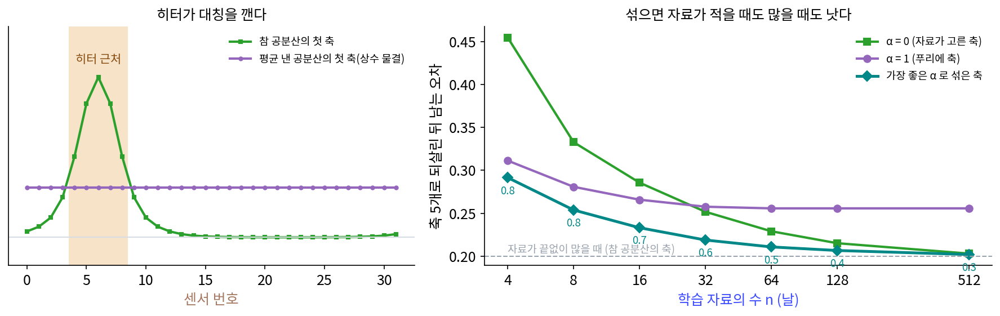

근사 대칭: 고정된 축과 배운 축을 섞기
대칭이 있으면 사람이 고른 축이 공짜로 주어지고, 대칭이 없으면 자료가 축을 고른다. 실제 자료는 대개 그 사이에 있다. 둥근 물탱크의 가장자리에 센서 32개를 돌아가며 달고 날마다 온도를 잰다고 하자. 탱크 물은 어디서나 비슷하게 출렁이니 고리를 따라 자리를 옮겨도 통계가 거의 같다. 그런데 칸 6 근처에는 히터가 있어서, 히터가 날마다 세거나 약하게 도는 만큼 그 근처만 따로 오르내린다. 미는 대칭이 대략만 성립하는 자료다. 게다가 센서를 단 지 얼마 안 되어 기록이 열여섯 날치뿐이라면, 자료로 공분산을 재기에도 모자란다. 대칭을 믿고 푸리에 축을 쓸까, 적은 자료로 축을 배울까?
역사: 표본 공분산을 쪼그라뜨리기
자료가 적을 때 자료로 잰 공분산을 믿기 어렵다는 것은 통계학의 오랜 걱정이었다. 칸 수에 비해 날 수가 적으면 자료로 잰 공분산은 고윳값이 실제보다 넓게 퍼지고, 날 수가 칸 수보다 적으면 역행렬조차 없다. 예를 들어 금융에서는 종목 수백 개의 수익률 공분산을 몇 년치 자료로 재야 하는 일이 흔하다.
르두아(Olivier Ledoit)와 볼프(Michael Wolf)는 2004년 『다변량 분석 저널』에 낸 「큰 차원 공분산 행렬의 조건이 좋은 추정량」에서, 자료로 잰 공분산과 단위 행렬(의 배수)을 일정한 비율로 섞는 추정량을 내놓았다. 섞는 비율을 자료에서 바로 계산하는 닫힌 식을 주었고, 그렇게 섞은 행렬은 조건이 좋아(역행렬을 구해도 노이즈가 크게 부풀지 않아) 늘 역행렬이 있고, 날 수와 칸 수가 함께 커질 때 제곱 오차로 재면 자료로 잰 공분산보다 더 정확하다는 것을 보였다. 단위 행렬은 「어느 방향도 특별하지 않다」는 가장 단순한 믿음이다. 단위 행렬 대신 「어느 자리도 특별하지 않다」는 믿음, 미는 대칭을 섞을 상대로 놓으면 이 절의 방법이 된다.
센서 32개, 열여섯 날
센서 자료는 스크립트로 만든다. 고리 위의 화이트 노이즈를 무게 (1, 2, 3, 4, 3, 2, 1)로 흐린 출렁임(칸마다 분산 1)에, 칸 6 가운데 폭 1.5칸의 봉우리를 날마다 다른 세기(표준편차 2)로 더했다. 전체 분산 가운데 24.9%를 히터 봉우리가 낸다. 자료가 끝없이 많을 때의 참 공분산을 알고 있으므로, 어떤 축을 고르든 새 날을 그 축 5개로 되살릴 때 남는 오차의 기댓값을 식으로 바로 계산할 수 있다.
섞는 법은 이렇다. 학습 자료 n일치로 공분산 Ĉ 을 잰다. 그리고 Ĉ 을 고리의 평행이동 32가지로 모두 밀어 평균 낸 행렬 C̄ 를 만든다. C̄ 는 어느 자리도 특별하지 않은 원형 행렬이라 고유벡터가 물결이고, 이것이 푸리에 축이다. 둘을 비율 α 로 섞은 행렬의 고유벡터를 축으로 쓴다.
자료 n일치마다 씨앗 200개로 뽑아 평균 낸 오차(축 5개로 되살리고 남는 제곱 오차의 기댓값 ÷ 전체 분산)는 아래와 같다. 자료가 끝없이 많아 참 공분산의 축을 쓸 수 있다면 0.200이고, 참 공분산을 평균 낸 행렬의 축(가장 좋은 푸리에 축 다섯)은 0.256이다.
| 학습 자료 n | α = 0 (배운 축) | α = 1 (푸리에 축) | α = 0.5 | 가장 좋은 α 와 그때 오차 |
|---|---|---|---|---|
| 4 | 0.455 | 0.311 | 0.306 | 0.8, 0.292 |
| 8 | 0.333 | 0.281 | 0.269 | 0.8, 0.254 |
| 16 | 0.286 | 0.266 | 0.240 | 0.7, 0.233 |
| 32 | 0.252 | 0.258 | 0.221 | 0.6, 0.219 |
| 64 | 0.229 | 0.256 | 0.211 | 0.5, 0.211 |
| 128 | 0.215 | 0.256 | 0.207 | 0.4, 0.207 |
| 512 | 0.203 | 0.256 | 0.204 | 0.3, 0.202 |
자료가 적을 때(4일, 8일) 배운 축은 푸리에 축보다 나쁘다. 32 × 32 공분산을 여덟 날치로 재면 노이즈가 축을 엉뚱한 쪽으로 끌고 가기 때문이다. 자료가 많아지면(32일부터) 배운 축이 히터 봉우리까지 담아 푸리에 축을 앞지른다. 푸리에 축은 히터가 깬 대칭을 끝까지 믿기 때문에 자료가 아무리 많아도 0.256 아래로 내려가지 못한다. 반면 n마다 알맞은 비율로 섞은 축은 모든 n에서 두 끝보다 낫다(512일에서는 0.202 대 0.203 으로 차이가 작다). 그리고 가장 좋은 α 는 자료가 늘수록 0.8에서 0.3으로 줄어든다. 자료가 적을 때는 대칭이라는 믿음에 많이 기대고, 자료가 쌓일수록 자료가 하는 말을 더 듣는 것이다.
이렇게 대칭이 대략만 성립하는 자료의 성질을 근사 대칭 (대칭이 대략만 성립함 / approximate symmetry)이라 부른다. 근사 대칭이 있는 자료에서 고정된 축과 배운 축은 둘 중 하나를 고르는 관계가 아니고, 비율 α 를 두고 섞을 수 있는 두 끝이다.

ML에서: 대칭을 조금만 믿는 신경망
신경망에서도 같은 저울질이 여러 꼴로 나온다. 가장 흔한 것은 데이터 늘리기다. 학습 그림을 밀거나 돌려 더 넣으면, 신경망 구조는 그대로 두고 자료 쪽에서 대칭을 믿게 만든다. 얼마나 자주 늘리느냐가 위의 α 와 어떻게 이어지는지는 문제 6에서 계산한다. 반대쪽 끝은 대칭을 구조에 못 박는 것이다. 합성곱 층은 모든 자리에 같은 무게를 써서 평행이동 대칭을 α = 1로 믿는다.
그 사이를 구조 안에서 잇는 연구도 있다. 핀지(Marc Finzi)와 동료들은 2021년 신경정보처리시스템 학회(NeurIPS)에 낸 「잔차 경로 사전 분포」에서 대칭을 지키는 층과 아무 제약 없는 층을 나란히 두고, 제약 없는 쪽에 더 큰 페널티를 주어 「되도록 대칭을 따르되, 자료가 요구하면 벗어나는」 신경망을 만들었다. 대칭이 근사적이거나 잘못 가정된 경우에도 잘 버티고, 대칭이 정확할 때는 대칭을 못 박은 신경망만큼 잘했다고 보고했다. 왕루이(Rui Wang), 월터스(Robin Walters), 로즈 위(Rose Yu)는 2022년 국제 기계학습 학회(ICML)에 낸 「대칭이 불완전한 동역학을 위한 근사 등변 신경망」에서, 난류 모의실험과 실제 제트 흐름 자료에서 대칭에 기울되 묶이지 않은 신경망이 대칭이 없는 신경망과 대칭을 너무 엄격히 지키는 신경망을 모두 앞섰다고 보고했다.
소리 쪽에서는 고정된 축의 꼴을 남기고 그 안의 숫자만 배우는 방법이 있다. 제기두르(Neil Zeghidour)와 동료들의 LEAF(2021년 국제 학습 표현 학회)는 사람 귀의 눈금에 맞춰 고정해 쓰던 필터 묶음(멜 필터 뱅크)을 배울 수 있는 앞단으로 바꾸었다. 구글 연구소의 소개 글에 따르면 필터마다 파라미터가 두 개뿐인 가보르 합성곱 층을 쓰고, 처음 값을 멜 필터 뱅크에 가깝게 잡은 뒤 분류 모델과 함께 학습시킬 수 있다. 사람이 고른 축에서 출발해 자료가 그 축을 조금씩 옮기게 하는 것이다.
어느 방법이든 남는 물음은 같다. 대칭을 얼마나 믿을지(위의 α)를 무엇으로 정하나. 위 표의 「가장 좋은 α」는 참 공분산을 알았기에 고를 수 있었다. 실제로는 따로 떼어 둔 검증 자료로 고르거나, 르두아와 볼프처럼 자료에서 바로 계산하는 식을 써야 한다. 그리고 어느 대칭을 믿을지부터 사람이 정해야 한다. 히터가 깬 것이 평행이동 대칭이라는 것을 우리는 알았지만, 자료가 어느 대칭을 대략 따르는지 자료에서 찾아내는 일은 아직 열린 문제다.
문제 4. 리뷰 세 개짜리 식당
지도 앱의 식당 평점을 매긴다. 모든 식당의 평균은 3.8점이다. 식당 가는 리뷰 3개의 평균이 5.0점, 식당 나는 리뷰 200개의 평균이 4.6점, 식당 다는 리뷰 30개의 평균이 4.8점이다. 앱은 (리뷰 수 × 그 식당 평균 + 10 × 3.8) ÷ (리뷰 수 + 10)으로 순위를 매긴다. (가) 세 식당의 순위 점수를 구하라. (나) 순위 점수에서 전체 평균 3.8에 실린 무게는 식당마다 얼마인가? (다) 앱의 순위 점수 식을 센서 섞기 식과 비교하라. 무엇이 Ĉ, C̄, α 에 해당하는가?

(가)는 평균이 제일 높은 가가 1등 아니에요? 5.0이잖아요.

식에 넣어 봐요.

가는 (15 + 38) ÷ 13 = 4.077, 나는 (920 + 38) ÷ 210 = 4.562, 다는 (144 + 38) ÷ 40 = 4.550이에요. 가가 꼴찌네요. 리뷰 세 개가 다 5점이어도 친구 셋이 써 줬을 수도 있으니까요.

(나)는 10 ÷ (리뷰 수 + 10)이야. 가는 0.769, 나는 0.048, 다는 0.250. 리뷰가 적을수록 전체 평균 쪽으로 많이 끌려가.

(다)는요? 센서 표에서 가장 좋은 α 가 n에 따라 어떻게 변했죠?

4일에 0.8, 16일에 0.7, 512일에 0.3이었어요. 리뷰 수가 n, 그 식당의 평균이 자료로 잰 Ĉ, 모든 식당의 평균 3.8이 대칭으로 평균 낸 C̄, 전체 평균의 무게가 α예요. 자료가 적을수록 「다른 데서도 대체로 그렇다」는 믿음에 기대는 거고요.

신입생이 첫 시험 하나 잘 봤다고 바로 장학생으로 뽑지 않고 한 학기 지켜보는 것처럼요. 첫 시험 하나가 리뷰 세 개고, 지켜보는 동안 전체 평균에 기대는 무게가 α예요.
문제 5. 히터가 약하면, 세면
센서 자료에서 학습 자료를 16일로 두고 히터 봉우리의 표준편차만 0, 1, 2, 4로 바꿔 씨앗 200개(위 표와 다른 씨앗)로 평균 냈다. 오차는 아래와 같다.
히터 표준편차 α = 0 α = 1 가장 좋은 α 와 그때 오차 참 공분산의 축 0 0.3450 0.2520 1.0, 0.2520 0.2430 1 0.3357 0.2562 0.9, 0.2555 0.2374 2 0.2824 0.2630 0.7, 0.2307 0.1997 4 0.1638 0.2760 0.6, 0.1338 0.1159 (가) 히터가 없을 때 왜 α = 1이 가장 좋은가? 그런데도 α = 1의 0.2520이 참 공분산의 축 0.2430보다 큰 까닭은? (나) 히터가 셀수록 가장 좋은 α 가 줄어드는 까닭을 말하라. (다) 「자리를 옮겨도 통계가 같다」는 조건을 빼면 C̄ 의 축은 여전히 푸리에 축인가?
(가)는 히터가 없으면 자료가 완전히 대칭이니까 푸리에 축이 참 축이고, 그래서 α = 1이 0.2430이 나와야 하는데… 0.2520이네요. 계산이 틀렸나요?
α = 1일 때 축 다섯을 고르려면 무엇을 알아야 하죠?

축이 물결이라는 건 알지만, 물결 서른두 개 가운데 어느 다섯 개가 센지는 C̄ 의 고윳값을 봐야 해요. 그 고윳값을 16일치로 재니까 순서가 가끔 틀리는구나. 축의 모양은 대칭이 주고, 축의 순서는 여전히 자료가 정해요.
(나)는 히터가 셀수록 대칭이 많이 깨지니까 대칭을 믿는 값이 비싸져. 표준편차 4면 α = 1이 0.2760으로 가장 나쁘고, 배운 축만 써도 0.1638이야. 히터 봉우리가 커서 열여섯 날로도 그 방향이 또렷이 보이니까.

(다)는요? C̄ 를 만드는 식에는 히터가 있든 없든 평행이동 32가지의 평균이 들어 있어요.

아, 조건을 빼도 C̄ 는 원형 행렬이에요. 32가지로 다 밀어 평균 냈으니까요. 스크립트에서도 첫 행을 한 칸 밀어 둘째 행과 비교하면 차이가 2.2 × 10⁻¹⁶이었어요. 그러니 축은 늘 푸리에 축이에요. 대신 조건이 깨지면 그 푸리에 축이 자료의 참 축이 아니게 되고요. 평균 내기는 대칭을 확인해 주는 게 아니라 대칭을 덮어씌우는 거였어요.

선형대수 시간에 행렬을 대칭 행렬로 만들려고 (A + Aᵀ)/2 를 쓰던 거랑 같아. 그렇게 하면 늘 대칭 행렬이 나오지만, 원래 A 가 대칭이었다는 뜻은 아니었지.
문제 6. 데이터 늘리기의 확률
센서 학습 자료 16일로 축을 배우되, 공분산을 섞는 대신 데이터를 늘린다. 날마다 100번씩 꺼내, 확률 p 로 0~31칸 가운데 무작위로 고리를 따라 밀고 아니면 그대로 둔 뒤, 늘린 자료로 공분산을 재고 축 5개를 배운다(씨앗 200개 평균). (가) p = 0, 0.3, 0.7, 1의 오차를 같은 씨앗으로 계산한 섞기 α = p 의 오차와 비교하라. (나) 왜 두 방법이 거의 같은가? (다) 학습 자료가 16일이 아니라 512일이라면 p 를 얼마로 잡겠는가? (위젯 2의 「문제 6 불러오기」로 n = 16의 곡선을 보자.)
(가)는 p = 0이면 둘 다 0.2857, 0.3이면 섞기 0.2554와 늘리기 0.2556, 0.7이면 0.2332와 0.2354, 1이면 0.2658과 0.2679예요. 거의 같네요. 늘리면 자료가 많아지니까 그냥 좋아지는 줄 알았는데, p = 1은 오히려 나빠요.
p = 1이면 늘린 자료에서 히터는 어디에 있죠?
아무 데나요. 날마다 무작위로 밀었으니까 히터 봉우리가 고리 위 아무 칸에나 나타나요. 실제 탱크에서는 늘 칸 6에 있는데요. 그러면 자료를 늘린 게 아니라 거짓 자료를 섞은 거네요.
(나)는 공분산으로 보면 돼. 확률 1 − p 로 들어가는 원래 날들의 공분산은 Ĉ 이고, 확률 p 로 들어가는 민 날들은 32가지 밀기가 고르게 섞이니까 그 공분산은 32가지로 평균 낸 C̄ 야. 꺼내는 횟수가 많으면 늘린 자료의 공분산은 (1 − p)Ĉ + pC̄ 에 가까워져. 섞기 식에서 α 자리에 p 가 들어간 거야.

그래요. 데이터 늘리기의 확률 p 가 대칭을 얼마나 믿을지 정하는 섞는 비율 α 였던 거예요. 날마다 100번만 꺼냈으니 p = 0.7에서 0.2332와 0.2354로 조금 어긋나는 것은 무작위로 꺼낸 탓이에요. (다)는요?
식당 평점과 같은 모양이에요. 리뷰가 200개인 식당은 전체 평균의 무게가 0.048로 작았죠. 섞기 표에서 512일의 가장 좋은 α 가 0.3이었으니까 p 도 0.3 근처요. 자료가 많으면 덜 늘리는 게 나아요.

손글씨 숫자 데이터에 뒤집기 늘리기를 확률 0.5로 그냥 켰다가 6과 9가 섞여서 점수가 떨어진 적이 있어요. 그 확률이 「대칭을 얼마나 믿을지」였던 거네요. 숫자에는 뒤집기 대칭이 아예 없었고요.